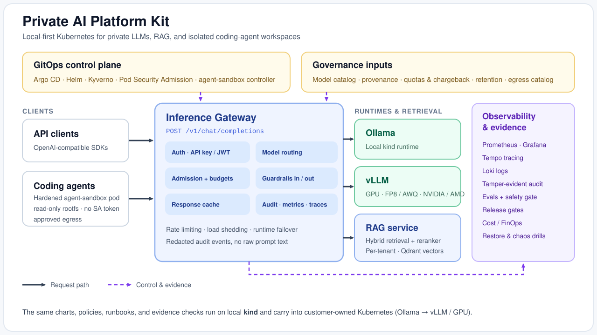

Private AI Platform Kit¶
A runnable, vendor-neutral Kubernetes platform for private LLMs, RAG, and coding-agent workspaces. It starts on a local kind cluster with Ollama, then uses the same Helm charts, GitOps layout, policies, runbooks, and evidence checks on customer-owned clusters with vLLM and GPU nodes.
It is for teams that want the operating model of a production AI platform without depending on a specific cloud provider.
- Tutorials. Start here. Go from nothing to a working private chat on your laptop.
- How-to guides: task recipes: deploy to a customer cluster, run evals, generate evidence, handle incidents.
- Reference: the production-readiness matrix, benchmarks, contracts, and release verification.
- Explanation: is this for you, how it works, the threat model, and the proof behind the claims.
What you get¶
- OpenAI-compatible gateway (chat, completions, embeddings, moderations, batch-inference) plus native Anthropic Messages and OpenAI Responses endpoints; API-key + JWT/JWKS auth with per-tenant sandbox binding and per-key records; model allowlists, admission limits, per-sandbox budgets (with OpenAI-style
x-ratelimit-*headroom headers) and rate limiting; input prompt-secret detection (block / redact / flag) and a response-path output guardrail; OpenAI-shaped error envelopes; a shared response cache; canary/shadow delivery; and a tamper-evident audit chain with an operator verifier and head anchoring. - A local Ollama profile and vLLM profiles for NVIDIA/AMD GPUs from the same charts, with prefix caching, FP8/AWQ quantization, and guided/speculative decoding.
- RAG with hybrid dense + lexical retrieval, an optional cross-encoder reranker, per-tenant retrieval isolation enforced by default and fail-closed (with optional RAG-side token verification), and RAGAS-style faithfulness evals.
- Coding-agent workspaces on the hardened kubernetes-sigs/agent-sandbox runtime, the standard and only workspace runtime (ADR 0010): non-root, read-only rootfs, no ambient credentials, and short-lived audience-bound workspace tokens, plus namespace isolation, RBAC, quotas, default-deny networking, governed egress, and RAG access.
- Governance & compliance: approved-only model catalog with promotion requests, reproducible provenance digests, model cards, a safety/jailbreak release gate, and an OWASP LLM Top 10 + NIST/EU-AI-Act/ISO-42001 crosswalk.
- Operations & evidence: SLOs and release gates, quota/chargeback, retention, egress governance; Prometheus + Grafana, Tempo tracing, Loki, and cost/OpenCost dashboards; Pod Security Admission, encryption-in-transit overlay, and Falco; restore/chaos drills and a disaster-recovery runbook; SBOMs, scans, signed images, provenance attestations, OpenSSF Scorecard, and evidence packs.
How it works¶

Requests enter the inference gateway at POST /v1/chat/completions (or the sibling /v1/completions, /v1/embeddings, /v1/messages, and /v1/responses surfaces, which all run the same governance path). The gateway authenticates the caller, enforces model allowlists and admission limits, applies input and output guardrails, routes to Ollama or vLLM (with failover), records Prometheus metrics and OTLP traces, and emits redacted audit events (returning OpenAI-shaped errors and per-sandbox budget-headroom headers). The local lab runs fully on kind; customer clusters keep the same repo structure and replace only the platform services they already operate. Per-profile diagrams and an end-to-end request walkthrough are in Architecture.
Maturity
Current release v0.27.0: reference implementation and customer lab. Production handoff requires current strict evidence, customer identity/secrets integration, capacity sizing, and backup validation. See Production readiness.
Stewarded by fluentorbit. Vendor-neutral and Apache-2.0 licensed. Found a security issue? See Security.